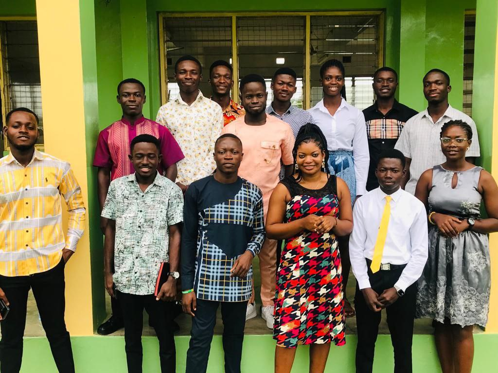

Welcome to The Church of Christ Ministry – Fosco Chapter, Assin Fosu
“A Royal Priesthood” – Serving Christ at Fosu College of Education.
“Greet one another with a holy kiss. The churches of Christ greet you.”

The Church of Christ Ministry
“A Royal Priesthood” – Serving Christ at Fosu College of Education.
“Greet one another with a holy kiss. The churches of Christ greet you.”